Panduan Penggunaan
Portal Siswa
SADAR DIRIMengenali diri, satu hari satu langkah.
Petunjuk langkah demi langkah untuk mencatat mood, menulis jurnal, menyusun refleksi
dan rencana, merawat portofolio prestasi, sampai mengatur privasi data Anda.
Seluruh gambar diambil langsung dari aplikasi yang berjalan.
Bab 03
Mood & jurnal
Catat perasaan harian, tulis curhat ABC dan grateful journal.
Bab 04
Refleksi & rencana
Refleksi mingguan dan target bulanan yang terukur.
Bab 05–07
Portofolio & privasi
Bukti prestasi, data diri, dan kendali persetujuan data.
1
Cari bab Anda
Bab 03–07 memuat semua layar siswa.
2
Ikuti nomor langkah
Kerjakan berurutan, jangan melompat.
3
Cocokkan dengan gambar
Setiap gambar memakai nomor rujukan.
“Cerita Anda milik Anda. Jurnal hanya dibaca Guru BK kelas, dan Anda bisa mencabut persetujuan kapan saja.”
Enam aspek kesejahteraan psikologis (Ryff) yang dipantau
Penerimaan diriRelasi positifKemandirian
Penguasaan diriTujuan hidupPertumbuhan
Daftar Isi
Isi panduan & peran Anda
Bab 01–02 berlaku untuk semua pengguna. Bab 03–07 khusus portal siswa.
A
Peta isi
01Masuk ke aplikasi3
02Kata sandi & keamanan akun4
03Beranda & jurnal emosi5
3.1Membaca beranda5
3.2Menulis jurnal5
04Ruang refleksi & rencana aksi6
4.1Mengisi refleksi6
4.2Menyusun rencana6
05Portofolio prestasi & info diri7
5.1Menambah prestasi7
5.2Melengkapi info diri7
06Privasi & pengingat8
6.1Persetujuan dan pengingat8
07Menu akun & keluar9
08Rutinitas, masalah, daftar periksa10
B
Batas peran siswa
| Yang bisa Anda lakukan | Yang bukan wewenang Anda |
|---|
| Mengisi mood, jurnal, refleksi, rencana, dan portofolio. |
Mengubah nama, NIS, atau kelas sendiri. |
| Mengatur pengingat dan mencabut persetujuan data. |
Membuka data atau jurnal siswa lain. |
| Mengunduh ringkasan portofolio dalam bentuk PDF. |
Membaca catatan konseling dan alert Guru BK. |
C
Konvensi penulisan
TebalTombol, menu, atau kolom yang harus diklik.
MiringContoh isian, nama status, atau kutipan singkat.
BadgeStatus data yang tampil di antarmuka.
1Urutan langkah; kerjakan dari atas ke bawah.
D
Sebelum mulai
1Perangkat
Ponsel dengan browser modern. Tampilannya selalu bingkai ponsel, juga saat dibuka di laptop.
2Akun
Dibuatkan sekolah. Masuk memakai NIS; sandi awal sama dengan NIS.
3Persetujuan
Setujui konsen data lebih dulu agar jurnal dan refleksi dapat dipakai.
E
Alur data Anda
1Anda menulis
Mood, jurnal, refleksi, dan rencana tersimpan pada akun Anda sendiri.
2Guru BK mendampingi
Hanya Guru BK kelas Anda yang dapat membuka data pendampingan.
3Admin tidak membaca
Superadmin mengelola akun dan layanan, bukan isi jurnal siapa pun.
F
Perangkat yang didukung
| Perangkat | Catatan pemakaian |
|---|
| Ponsel Android / iPhone | Browser bawaan atau Chrome/Safari versi terbaru; tampilan optimal pada lebar 400–430 piksel. |
| Laptop sekolah | Bisa dipakai, tetapi tampilan tetap berupa kolom ponsel 480 piksel di tengah layar. Tidak ada tata letak lebar. |
| Koneksi internet | Diperlukan saat menyimpan; draf yang belum dikirim tidak tersimpan luring. |
Bila ragu, bertanya dulu. Guru BK kelas adalah pihak pertama yang bisa menjelaskan cara kerja aplikasi, termasuk apa yang terlihat dan tidak terlihat oleh mereka.
Bab 01 · Semua peran
Masuk ke aplikasi
Halaman masuk tampil ringkas di ponsel: formulir langsung terlihat tanpa perlu menggulir.
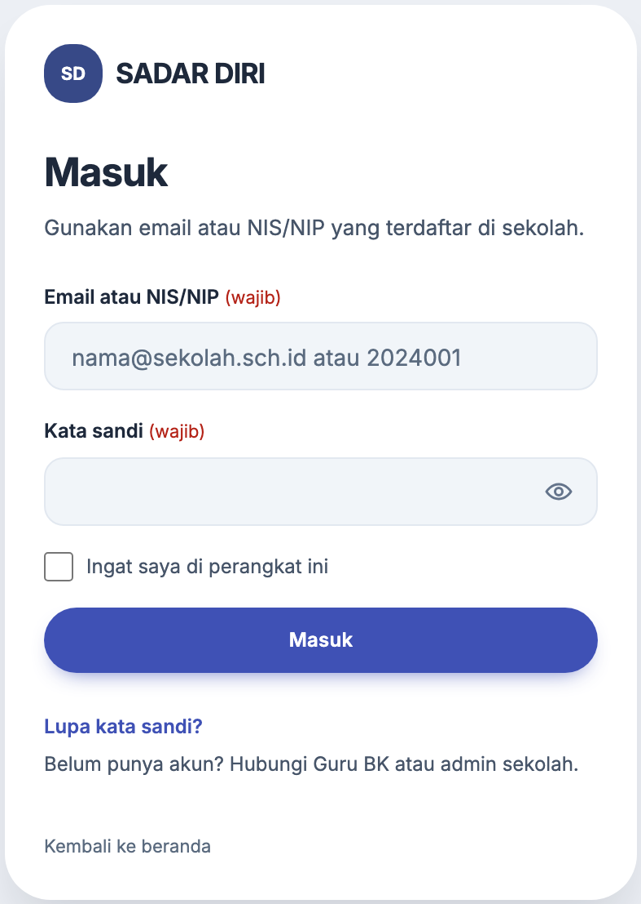
Gambar 1. Halaman masuk pada layar ponsel 420 × 900. Logo, formulir, dan tautan pemulihan berada dalam satu kartu.
1.1
Cara masuk
- Buka alamat aplikasi. Anda langsung diarahkan ke halaman Masuk.
- Isi Email atau NIS/NIP dengan NIS Anda, mis. 2024001.
- Isi Kata sandi. Centang Ingat saya hanya bila perangkat pribadi.
- Klik Masuk. Anda langsung dibawa ke beranda siswa.
1.2
Isi formulir
| Kolom | Keterangan |
|---|
| Email atau NIS/NIP | NIS Anda, mis. 2024001; email juga diterima. |
| Kata sandi | Sandi pribadi; ikon mata menampilkan isian. |
| Ingat saya | Menyimpan sesi di perangkat pribadi. |
| Lupa kata sandi? | Mengirim tautan pemulihan ke email terdaftar. |
Tanpa kode OTP. Siswa dan Guru BK tidak menerima kode verifikasi email. Setelah NIS dan sandi benar, akun langsung terbuka.
Lupa kata sandi? Klik tautan di bawah formulir. Tautan pemulihan dikirim ke email terdaftar; bila email tidak aktif, minta admin mereset sandi.
1.3
Bila muncul pesan gagal
| Pesan | Artinya & tindakan |
|---|
| Kredensial tidak cocok | NIS atau sandi salah. Periksa huruf besar/kecil, lalu coba lagi atau pakai pemulihan sandi. |
| Akun belum aktif | Status akun masih pending, inactive, atau archived. Minta admin mengaktifkan. |
| Terlalu banyak percobaan | Batas lima percobaan per menit tercapai. Tunggu sekitar satu menit sebelum mencoba lagi. |
1.4
Empat hal setelah masuk pertama kali
1Ganti sandi
Bila akun masih memakai NIS, aplikasi meminta sandi pribadi lebih dulu.
2Persetujuan data
Baca ringkasan konsen, lalu setujui agar jurnal dan refleksi dapat dipakai.
3Lengkapi profil
Isi biodata dan data kesehatan supaya pendampingan lebih tepat sasaran.
4Atur pengingat
Pilih jam dan kanal pengingat agar jurnal harian tidak terlewat.
Bab 02 · Semua peran
Kata sandi & keamanan akun
Satu lapis keamanan yang wajib Anda rawat sendiri: kata sandi pribadi.
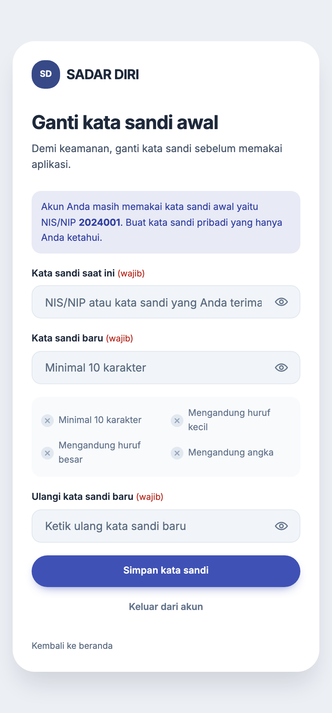
Gambar 2. Halaman ganti sandi di ponsel. Empat syarat kekuatan sandi berubah menjadi centang saat terpenuhi.
2.1
Mengganti kata sandi awal
Akun baru memakai NIS sebagai kata sandi awal, sehingga aplikasi meminta penggantian sebelum halaman lain dapat dibuka.
- Isi Kata sandi saat ini — yaitu NIS atau sandi yang Anda terima.
- Isi Kata sandi baru: minimal 10 karakter, mengandung huruf besar, huruf kecil, dan angka.
- Ulangi pada kolom Ulangi kata sandi baru, lalu klik Simpan kata sandi.
- Setelah tersimpan, Anda langsung dibawa ke beranda peran Anda dengan sandi baru.
Jangan bagikan sandi. Petugas sekolah tidak pernah meminta kata sandi Anda. Sandi yang diketahui orang lain membuat isi jurnal ikut terbaca.
2.2
Syarat sandi yang diterima
| Syarat | Contoh & catatan |
|---|
| Minimal 10 karakter | Rahasia#2026 lolos; rahasia ditolak. |
| Huruf besar & kecil | Kombinasikan keduanya, bukan hanya satu jenis huruf. |
| Mengandung angka | Tambahkan angka yang tidak mudah ditebak, mis. tanggal penting. |
| Berbeda dari NIS | Sandi awal tidak boleh dipakai ulang setelah diganti. |
Tanpa verifikasi dua faktor. Akun siswa tidak memakai kode OTP email. Keamanan bergantung pada kerahasiaan sandi dan kebiasaan keluar dari akun.
Lupa sandi? Gunakan tautan pemulihan di halaman masuk. Bila email tidak lagi aktif, ajukan reset kepada admin sekolah melalui Guru BK.
Bab 03 · Portal siswa
Beranda & jurnal emosi
Mulai dari mencatat perasaan hari ini, lalu menuliskan apa yang terjadi.
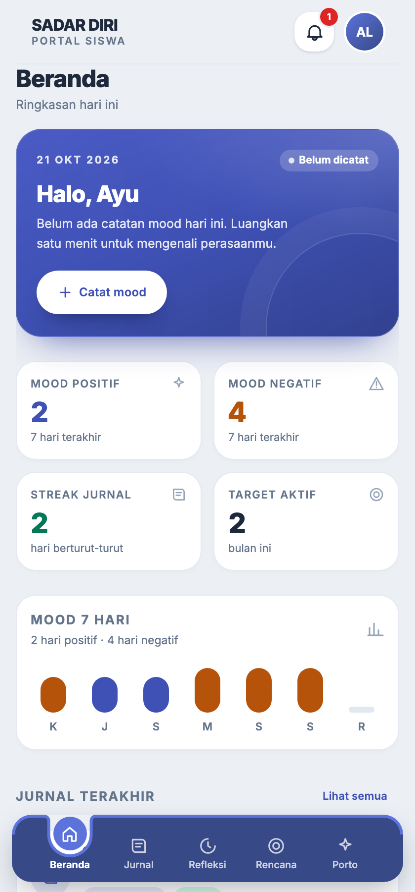
Gambar 3. Beranda: mood hari ini, ringkasan 7 hari, jurnal terakhir, dan navigasi bawah.
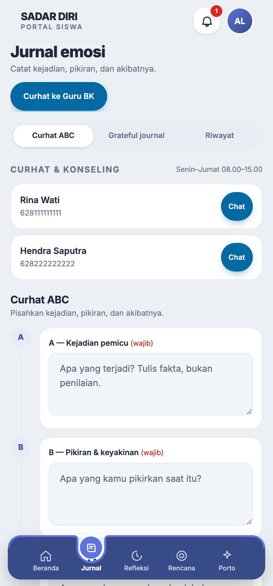
Gambar 4. Jurnal emosi dengan tab Curhat ABC, Grateful journal, dan Riwayat.
3.1
Membaca beranda
- Kartu mood menampilkan mood terakhir dan intensitas 1–5. Tombol Catat mood membuka lima emoji (😢–😄).
- Setiap mood wajib disertai alasan, mis. senang karena tugas selesai. Satu entri per hari; ubah lewat Ubah mood.
- Kartu kuning Refleksi pekan ini wajib diisi muncul Jumat–Minggu bila refleksi mandiri pekan itu belum dikirim.
- Mood positif / negatif menghitung catatan tujuh hari terakhir.
- Streak jurnal menunjukkan berapa hari berturut-turut Anda menulis.
- Mood 7 hari memakai tinggi batang untuk intensitas: batang indigo untuk hari positif, oranye untuk hari negatif.
- Jurnal terakhir membuka entri terakhir; Lihat semua menuju riwayat.
3.2
Menulis jurnal
- Buka tab Jurnal, pilih Curhat ABC untuk menulis kejadian, pikiran, dan akibatnya.
- Isi A — Kejadian pemicu: apa yang terjadi, tulis fakta bukan penilaian.
- Isi B — Pikiran & keyakinan: apa yang Anda pikirkan saat itu.
- Isi C — Akibat & perasaan: apa yang Anda rasakan dan lakukan setelahnya.
- Klik Simpan jurnal. Isian juga tersimpan otomatis sebagai draf; gunakan Grateful journal untuk hal yang disyukuri.
- Bagian Curhat & konseling di atas formulir memuat nomor WhatsApp Guru BK kelas Anda; tombol Chat membuka percakapan dengan pesan pembuka berisi nama dan kelas.
Navigasi bawah berisi lima tab: Beranda, Jurnal, Refleksi, Rencana, dan Porto. Tab terakhir berganti menjadi halaman yang sedang dibuka (mis. Info atau Privasi), dan halaman lain dibuka lewat menu akun di kanan atas.
Butuh bantuan segera? Gunakan tombol Curhat ke Guru BK di halaman jurnal, atau hubungi nomor WhatsApp layanan BK sekolah pada jam layanan.
Bab 04 · Portal siswa
Ruang refleksi & rencana aksi
Mengubah kejadian menjadi pelajaran, lalu menjadi langkah kecil yang terukur.
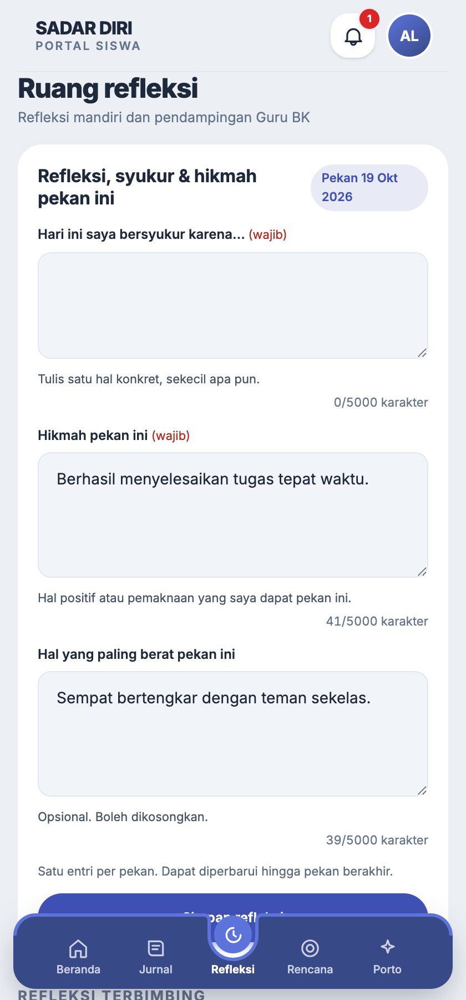
Gambar 5. Ruang refleksi mingguan dan daftar refleksi terbimbing dari Guru BK.
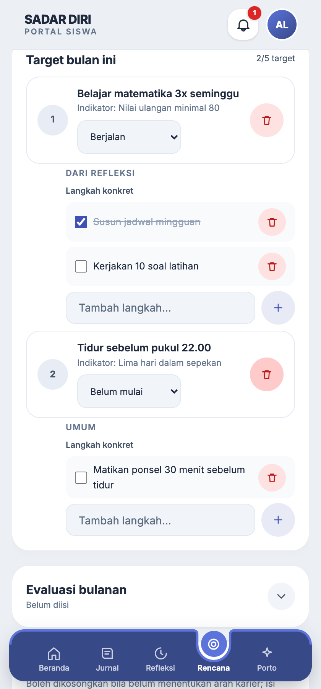
Gambar 6. Rencana aksi: target bulan ini, progres, dan evaluasi bulanan.
4.1
Mengisi refleksi
- Buka tab Refleksi. Periode minggu berjalan tertulis di atas formulir.
- Isi Hari ini saya bersyukur karena… dan Hikmah pekan ini (keduanya wajib); Hal yang paling berat pekan ini opsional.
- Pengingat otomatis dikirim Jumat sore dan Minggu malam bila pekan itu belum terisi (dapat dimatikan di halaman Privasi).
- Klik Simpan refleksi. Satu entri per pekan dan masih bisa diperbarui sampai pekan berakhir.
- Bila Guru BK membuka Refleksi terbimbing, jawab pertanyaan pada kartu berlabel Belum terkirim.
Dibaca Guru BK. Refleksi menjadi bahan pendampingan. Tulis sejujurnya; tidak ada jawaban yang salah.
4.2
Menyusun rencana
- Buka tab Rencana, lalu klik Tambah target.
- Tulis Target yang spesifik, mis. Belajar matematika 3x seminggu, lalu isi Indikator keberhasilan sebagai ukurannya.
- Pilih Dasar target (Umum, Dari refleksi, atau Dari rencana masa depan).
- Tambahkan sampai sepuluh langkah konkret lewat kolom Tambah langkah… di bawah tiap target; centang saat selesai, atau hapus lewat ikon tong sampah.
- Maksimal lima target per bulan. Status progres muncul di kartu Target bulan ini.
- Di akhir bulan, isi Evaluasi bulanan untuk menilai apa yang berjalan dan apa yang perlu diubah.
Kecil tapi rutin. Target yang terlalu besar mudah ditinggalkan. Pilih satu langkah yang bisa dilakukan minggu ini.
Indikator target
Belum mulai, Berjalan, Tercapai, dan Belum tercapai menentukan persentase capaian bulan.
Rencana jangka panjang
Bersifat opsional: cita-cita, rencana karier, rencana pendidikan, dan langkah besar bisa diisi kapan saja.
Bab 05 · Portal siswa
Portofolio prestasi & info diri
Menyimpan bukti capaian dan menjaga data pribadi tetap akurat.
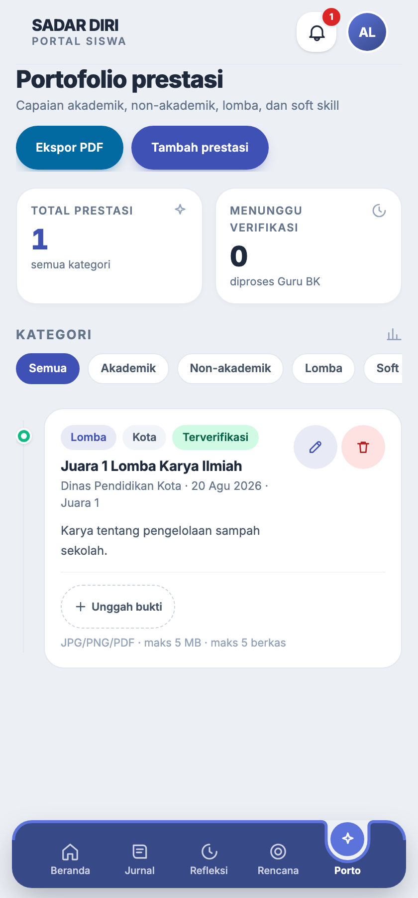
Gambar 7. Portofolio prestasi: total prestasi, status verifikasi, kategori, dan unggah bukti.
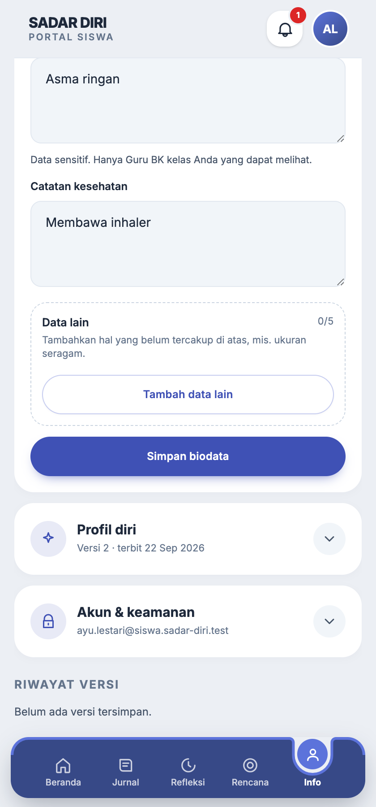
Gambar 8. Info diri: kelengkapan profil 70%, biodata, dan data kesehatan.
5.1
Menambah prestasi
- Buka tab Porto di navigasi bawah, lalu klik Tambah prestasi.
- Isi nama kegiatan, kategori (akademik, non-akademik, lomba, soft skill), tingkat, dan tanggal.
- Unggah bukti JPG, PNG, atau PDF — maksimal 5 MB per berkas dan 5 berkas per prestasi.
- Simpan. Status awal Menunggu verifikasi sampai Guru BK memeriksa.
Ekspor PDF. Tombol Ekspor PDF membuat ringkasan portofolio untuk lampiran berkas sekolah.
5.2
Melengkapi info diri
- Buka menu akun di kanan atas, pilih Info diri. Kartu atas menampilkan NIS, kelas, wali kelas, dan persentase kelengkapan.
- Buka bagian Biodata, lalu isi tanggal lahir, jenis kelamin, nomor kontak, alamat, dan data kesehatan (golongan darah, tinggi, berat, riwayat penyakit).
- Butuh data tambahan? Gunakan Tambah data lain (maksimal lima baris, mis. ukuran seragam). Baris yang belum lengkap diabaikan saat disimpan.
- Klik Simpan biodata. Setiap perubahan tercatat pada audit log.
Nama dan NIS tidak dapat diubah sendiri. Bila ada kekeliruan, ajukan ke Guru BK atau admin sekolah.
Status verifikasi
Menunggu, Diverifikasi, atau Ditolak dengan catatan dari Guru BK.
Bukti berkas
Format JPG/PNG/PDF, maksimal 5 MB per berkas dan 5 berkas per prestasi.
Kelengkapan profil
Persentase dihitung dari biodata dan data kesehatan yang terisi.
Bab 06 · Portal siswa
Privasi & pengingat
Mengatur sejauh mana data dipakai dan bagaimana aplikasi mengingatkan Anda.
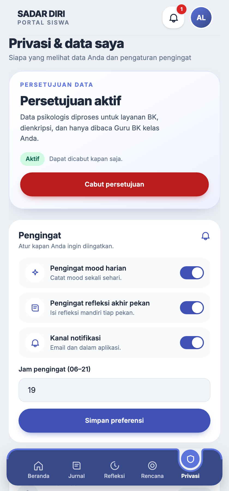
Gambar 9. Privasi & data: status persetujuan, pengingat, dan jam pengingat.
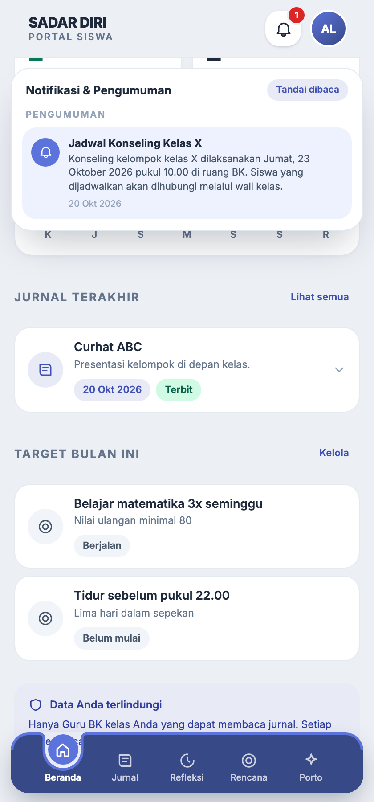
Gambar 10. Panel lonceng: pengumuman sekolah dan riwayat pengingat, dengan tombol Tandai dibaca.
6.1
Mengatur persetujuan
- Pada Persetujuan data, status Aktif berarti data psikologis boleh diproses untuk layanan BK.
- Bila ingin berhenti, klik Cabut persetujuan.
- Jurnal, refleksi, dan portofolio terkunci sampai Anda menyetujui kembali.
- Untuk mengaktifkan lagi, buka Jurnal atau Refleksi, lalu klik Setujui pada halaman persetujuan.
- Pencabutan dan pemberian ulang tercatat pada audit log beserta waktunya.
Dampak pencabutan. Data lama tidak dihapus otomatis, tetapi fitur pengisian terkunci sampai persetujuan aktif kembali.
6.2
Mengatur pengingat
- Pada Pengingat, atur Pengingat mood harian dan Pengingat refleksi akhiran pekan.
- Pilih Kanal notifikasi yang tersedia pada perangkat Anda.
- Tentukan Jam pengingat (06–21), lalu klik Simpan preferensi.
- Buka ikon lonceng di kanan atas untuk melihat pengumuman sekolah dan riwayat pengingat.
Izin notifikasi. Bila pengingat tidak muncul, izin notifikasi browser mungkin ditolak. Buka aplikasi langsung dan periksa pengaturan perangkat.
6.3
Ringkasan tombol di halaman privasi
| Tombol | Yang terjadi |
|---|
| Cabut persetujuan | Status berubah menjadi Dicabut; formulir psikologis dikunci sampai disetujui lagi. |
| Simpan preferensi | Menyimpan pilihan pengingat, kanal notifikasi, dan jam pengingat. |
| Setujui (halaman persetujuan) | Mengaktifkan lagi pemrosesan data setelah pencabutan. |
Bab 07 · Portal siswa
Menu akun & keluar
Jalan pintas menuju info diri, privasi, portofolio, dan tombol keluar.
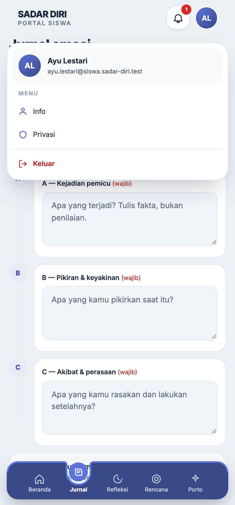
Gambar 11. Menu akun: Info, Privasi, dan Keluar. Halaman yang sudah ada di navigasi bawah tidak diulang di sini.
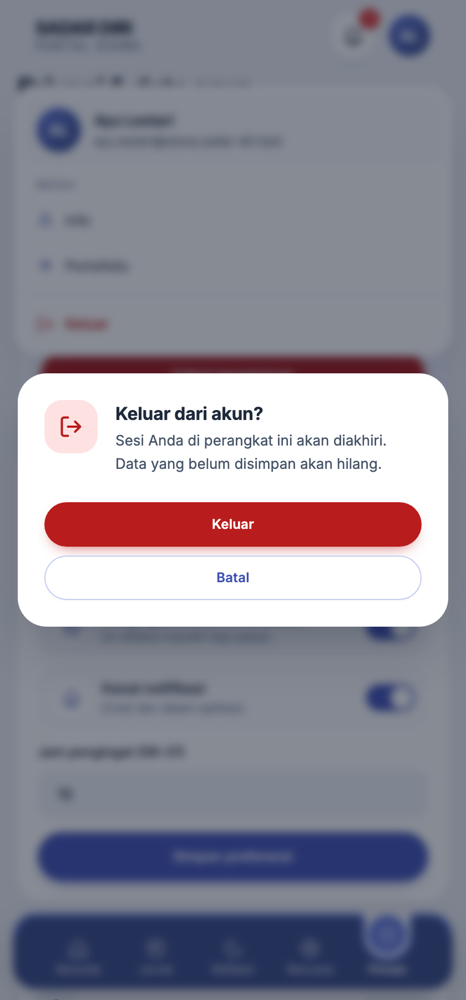
Gambar 12. Konfirmasi keluar: data yang belum disimpan akan hilang.
7.1
Membuka menu akun
- Klik avatar di kanan atas. Menu hanya memuat halaman yang tidak ada di navigasi bawah.
- Pilih Info untuk data diri dan kelengkapan profil.
- Pilih Privasi untuk persetujuan dan pengingat; Portofolio muncul bila tab Porto tidak sedang dibuka.
- Pilih Keluar untuk mengakhiri sesi pada perangkat ini.
7.2
Keluar dengan aman
Setelah Keluar ditekan, dialog konfirmasi muncul. Tekan Keluar sekali lagi untuk mengakhiri sesi, atau Batal untuk kembali.
Perangkat bersama. Selalu keluar setelah memakai komputer sekolah atau ponsel pinjaman, terutama bila Anda tidak mencentang Ingat saya.
7.3
Yang terjadi setelah keluar
| Kondisi | Akibatnya |
|---|
| Sesi berakhir | Anda kembali ke halaman masuk; halaman siswa tidak dapat dibuka tanpa sandi. |
| Isian belum disimpan | Jurnal tersimpan otomatis sebagai draf, tetapi isian refleksi atau target yang belum ditekan Simpan akan hilang. |
| Ingat saya aktif | Perangkat menyimpan sesi lebih lama; jangan dipakai di perangkat bersama. |
Bab 08 · Penutup
Rutinitas singkat, dampak panjang
Tiga kebiasaan kecil yang membuat aplikasi benar-benar bekerja untuk Anda.
8.1
Rutinitas yang disarankan
| Irama | Kegiatan |
|---|
| Harian | Isi mood, tulis satu entri jurnal, periksa pengingat. |
| Mingguan | Isi refleksi, perbarui progres target, tambah prestasi baru bila ada. |
| Bulanan | Isi evaluasi bulanan, tinjau portofolio, dan perbarui info diri. |
8.2
Bila ada masalah
Tidak bisa masuk
Pastikan akun aktif. Bila sandi terlupa, gunakan pemulihan; bila email tidak lagi aktif, minta admin mereset sandi.
Sandi ditolak saat diganti
Periksa syarat: minimal 10 karakter, ada huruf besar, huruf kecil, dan angka. Sandi baru tidak boleh sama dengan NIS.
Menu hilang
Bisa jadi fitur dimatikan sekolah, atau konsen data belum disetujui. Periksa keduanya sebelum melapor.
Jurnal tidak bisa disimpan
Periksa koneksi dan panjang isian. Bila tetap gagal, salin tulisan Anda dulu agar tidak hilang.
8.3
Daftar periksa mingguan
Sebelum akhir pekan
- Mood terisi minimal lima hari.
- Satu entri jurnal atau grateful journal.
- Refleksi minggu berjalan tersimpan.
Saat awal bulan
- Evaluasi target bulan lalu diisi.
- Target baru ditetapkan, maksimal lima.
- Portofolio dan info diri diperiksa.
8.4
Istilah yang sering muncul
| Istilah | Arti di aplikasi |
|---|
| Mood | Catatan perasaan harian dengan intensitas 1–5 dan pilihan emosi. |
| Curhat ABC | Pola jurnal Activating event – Belief – Consequence untuk memisahkan fakta dan pikiran. |
| Refleksi terbimbing | Pertanyaan yang dibuka Guru BK dan harus Anda jawab pada minggu berjalan. |
| Streak | Jumlah hari berturut-turut Anda mengisi jurnal tanpa terputus. |
8.5
Ke mana harus bertanya
| Kebutuhan | Hubungi |
|---|
| Akun, NIS, kelas, atau reset sandi | Guru BK kelas, lalu diteruskan ke admin sekolah. |
| Pendampingan dan kondisi mendesak | Guru BK atau layanan BK sekolah pada jam layanan. |
| Data keliru atau prestasi ditolak | Guru BK yang memverifikasi portofolio Anda. |
Prinsip yang dijaga aplikasi ini: siswa memegang kendali atas ceritanya, Guru BK mendampingi dengan konteks, dan admin memastikan layanan berjalan tanpa membaca isi psikologis siapa pun.